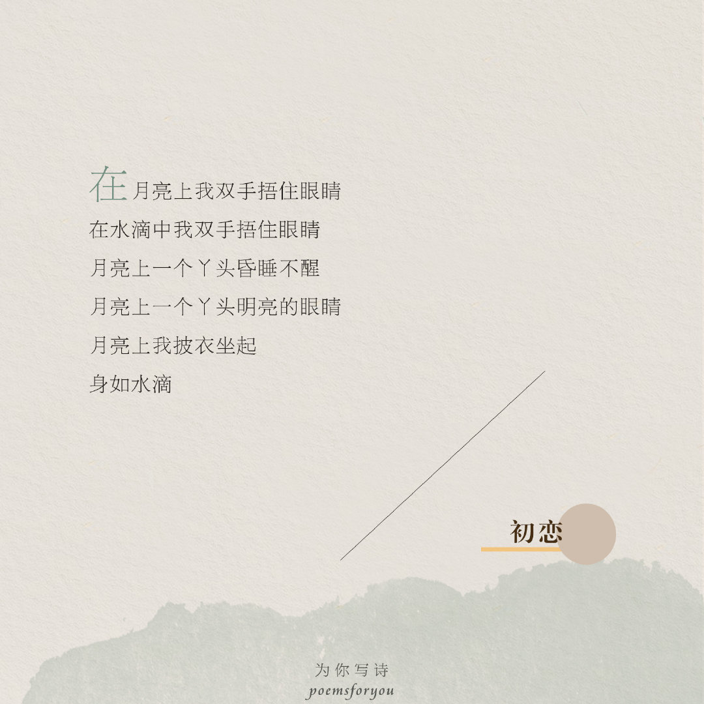

我们还有诗歌
poemsforyou
海子

《初恋》

灯诗
海子（1964年3月24日—1989年3月26日），原名查海生，出生于安徽省怀宁县高河镇查湾村，当代青年诗人。海子在农村长大，1979年15岁时考入北京大学法律系，1982年大学期间开始诗歌创作，1983年自北大毕业后分配至北京中国政法大学哲学教研室工作，1989年3月26日在山海关附近卧轨自杀，年仅25岁。
海子1983年自北京大学毕业后分配至中国政法大学哲学教研室工作，1984年创作成名作《亚洲铜》和《阿尔的太阳》，第一次使用“海子”作为笔名。从1982年至1989年不到7年的时间里，海子创作了近200万字的作品，出版了《土地》、《海子、骆一禾作品集》、《海子的诗》和《海子诗全编》等等。
在诗人生命里，从1984年的《亚洲铜》到1989年3月14日的最后一首诗《春天，十个海子》，海子创造了近200万字的诗歌、诗剧、小说、论文和札记。比较著名的有《亚洲铜》、《麦地》、《以梦为马》、《黑夜的献诗——献给黑夜的女儿》等。
他在诗里写“我必将失败，但诗歌本身以太阳必将胜利”，他写“你来人间一趟，你要看看太阳”。太阳会随时间升起落下，但他的诗歌却像个永恒的太阳，在无数人心头熠熠闪光。